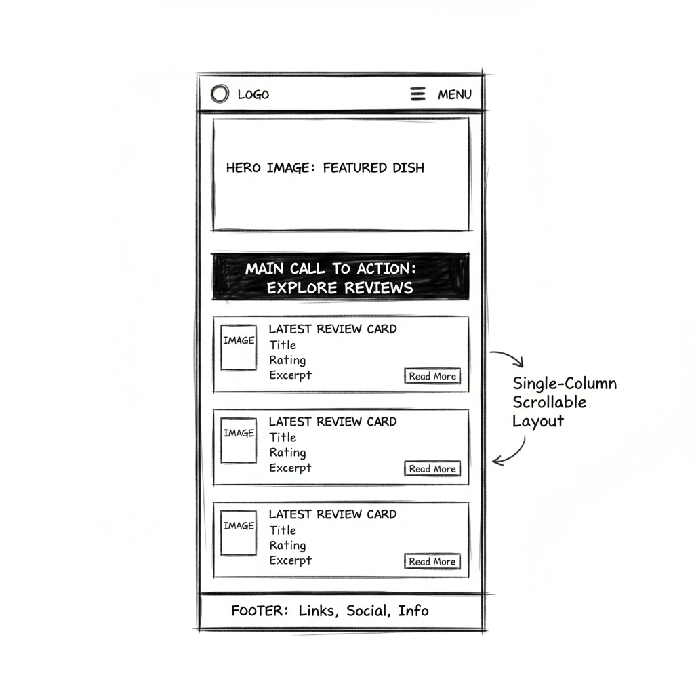
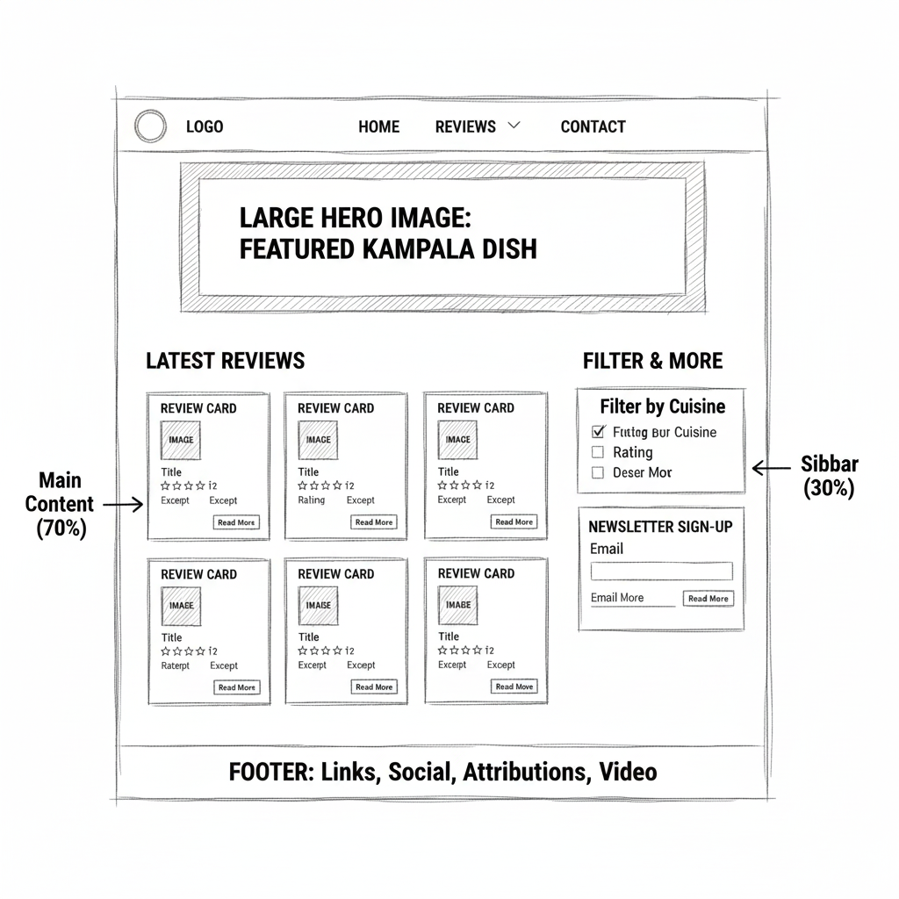

A blueprint for the Individual Website Project.
Name: Kampala Eats (KLA Eats)
Reason: The name is brief, memorable, and directly establishes the site's geographic focus (Kampala) and content area (food reviews), which is essential for branding and recognition.
Optional Domain: kampala-eats.com
The primary purpose of **Kampala Eats** is to serve as a comprehensive, curated hub for food exploration in Kampala. It will provide **independent, detailed reviews** and **location information** for local restaurants and street food vendors, helping both residents and visitors discover high-quality dining experiences. The site's content will include:
These questions reflect the target audience (food enthusiasts, tourists, and locals):
The scheme uses colors inspired by the Ugandan flag and local street signs for high visibility and cultural relevance.
#D52B1E (Red). Used for headings, CTA buttons, active links, and prominent borders.#FFD700 (Gold). Used for navigation hover states, section dividers, and subtle accents.#F7F7F7 (Light Gray). Used for main body background.#333333 (Dark Gray). Used for all body text for contrast.(Note: These colors are applied to this document's headings, background, and text via the embedded CSS.)
The fonts are selected for high readability and a modern, bold look.
The home page will feature the latest content (reviews) and primary navigation.

Layout is a single column stack: Logo/Hamburger Menu, Hero Image, Main CTA, Latest 3 Reviews (stacked), Footer.

Layout features: Logo/Horizontal Nav, Large Hero, Main Content Area (Latest Reviews) in a two-column grid, Sidebar for Filters/Ad, Footer.
*Note: The actual wireframe images should be sketches (hand-drawn or digital) and not placeholders. You must replace the image tags above with your actual sketches.